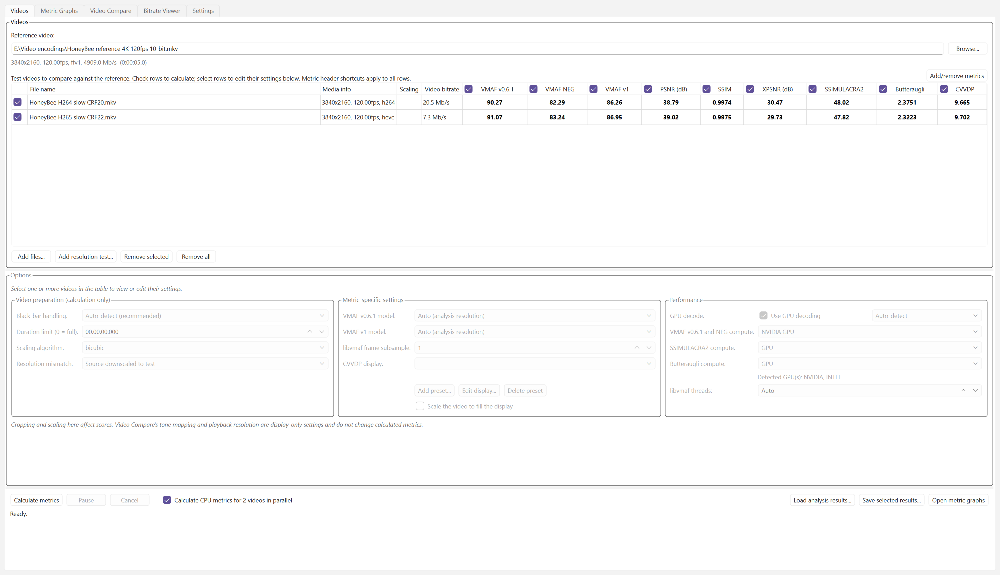
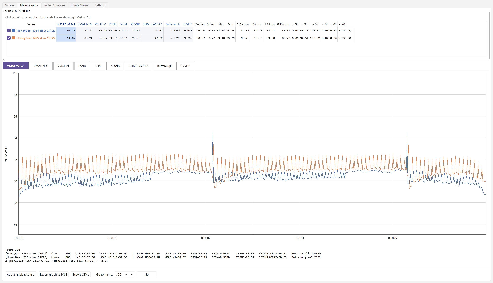
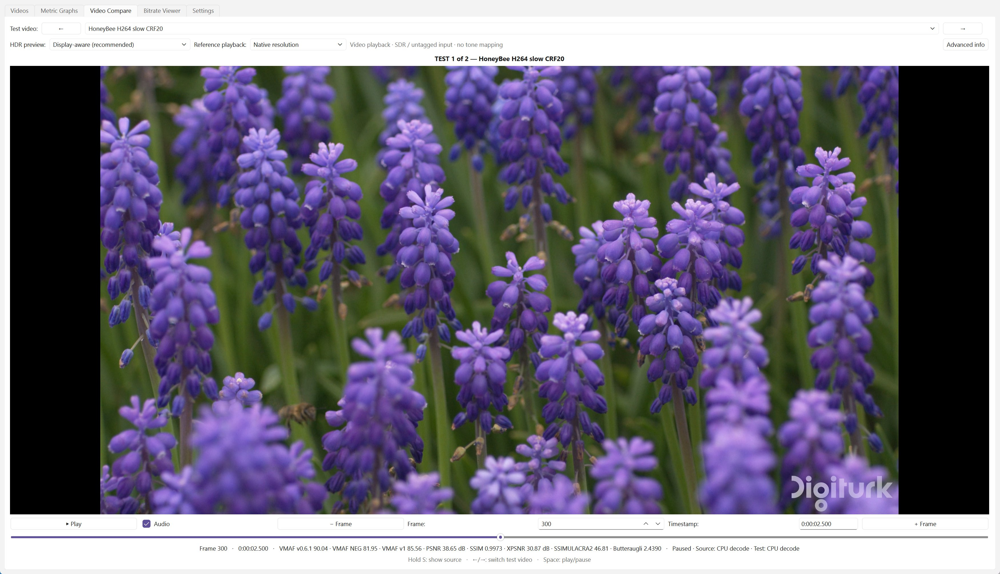
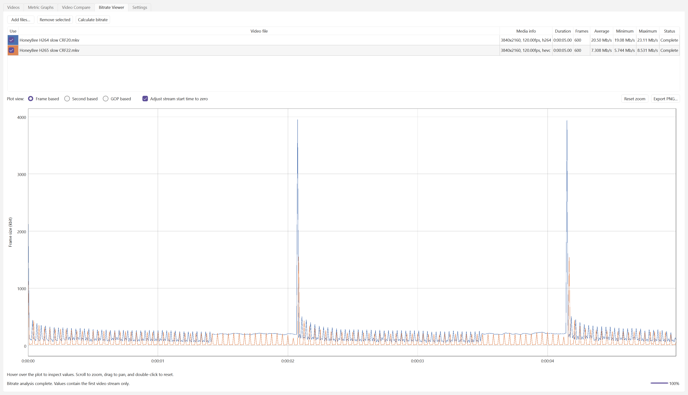

VideoMetricsLab
Video quality metrics on any GPU, and frame-exact A/B comparison of your encodes.
VideoMetricsLab is a free Windows app for measuring and comparing video quality. Add a source and any number of encodes, and it calculates VMAF, VMAF v1, SSIMULACRA2, Butteraugli, ColorVideo VDP, PSNR, SSIM and XPSNR in one run, accelerated on NVIDIA, AMD and Intel GPUs. Per-frame graphs show exactly where each encode falls behind, and frame-exact playback switches instantly between the source and each encode, so you can see the differences the scores point to. It's built for anyone tuning encoders, comparing codecs or settings, or checking a release before it ships.
Windows 10 or 11 (x64). Needs FFmpeg 9 or newer with libvmaf, installed separately. Free and open source, under the MIT licence.
New in v2.0
v2.0 is a major performance update. VMAF, VMAF NEG and VMAF v1 now run on any GPU, the other metrics and Video Compare are several times faster, and the app uses far less memory. See the release notes.
Features
Metrics
- VMAF v0.6.1, VMAF NEG, VMAF v1, PSNR, SSIM, XPSNR, SSIMULACRA2, Butteraugli and ColorVideo VDP, for many test videos at once.
- VMAF models for standard, phone, 4K and HFR viewing.
Fast on any GPU
- VMAF, VMAF NEG and VMAF v1 on NVIDIA, AMD and Intel GPUs with libvmaf-fast: VMAF v1 up to 17x faster.
- SSIMULACRA2, Butteraugli and ColorVideo VDP on the GPU with Vship (CUDA, HIP or Vulkan); libjxl on the CPU when no GPU can be used, for SSIMULACRA2 and Butteraugli.
- PSNR, SSIM and XPSNR 2.7x-11x faster, calculated in the app.
- GPU video decoding, with software decoding for formats the GPU can't handle, such as VVC.
Compare and inspect
- Frame-exact playback that switches instantly between the source and each encode (hold S), with zoom, at up to 120 fps in 4K HDR.
- Metric curves, statistics and per-frame scores (per second for ColorVideo VDP), with each metric's best and worst results highlighted.
- Bitrate by frame, second or GOP.
Workflow
- Black bars and resolution mismatches handled automatically.
- Results saved and reloaded automatically.
- Drag and drop videos, sort and reorder the list, and a dark theme.
- A command line,
VideoMetricsLab-cli, for scripts. - Two test videos calculated in parallel on many-core CPUs.
Screenshots



